A private AI workspace that runs entirely inside your browser tab.
No server · no API keys required · nothing leaves your deviceOpen LocalMind. The first time, it downloads a small default model (LFM2.5 230M, about 140 MB) and keeps it in your browser’s cache, so later starts skip the download. The welcome screen says which model is ready and offers a few example prompts. Tap one, or type a message and press Enter. The model, your chats and your memory stay on your device.
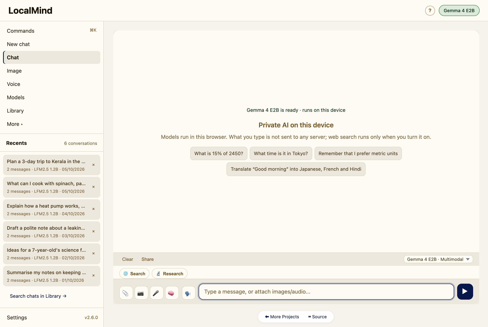
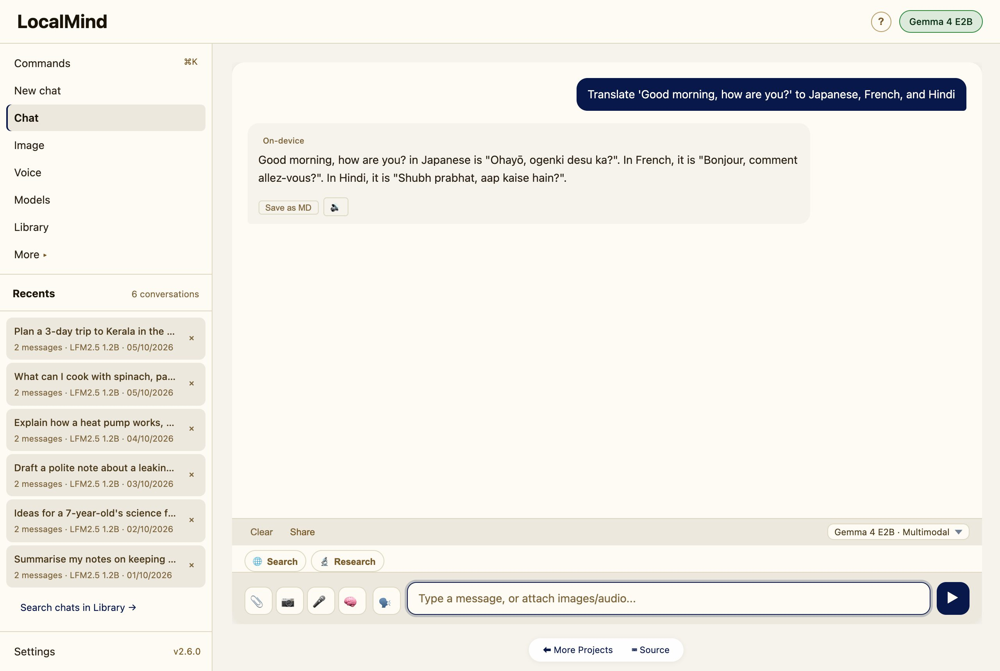
The model picker sits above the message box. It lists the models already on this device first, then any partly downloaded, then the rest with their download size, so you can see what will load straight away.
Settings → Models adds any Hugging Face ONNX repo or GGUF URL, or your own Ollama / LM Studio server. The full list is in FEATURES.md.
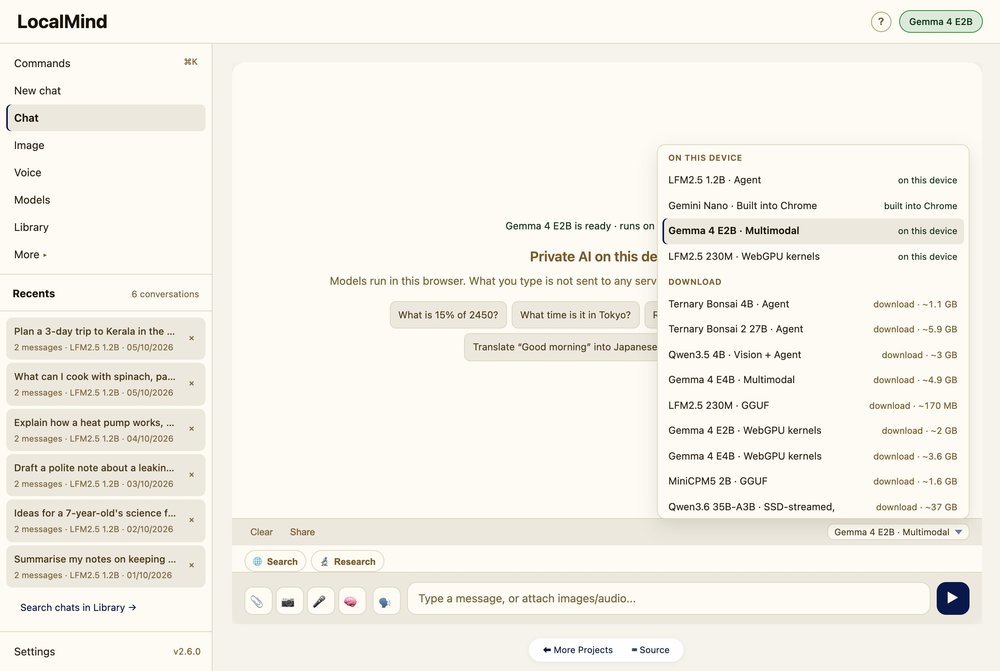
The sidebar holds New chat, Chat, Image, Voice, Models and Library. More opens Compare, Batch, Diffuse, OCR, Vision, Clone and Folder. Search and Research stay as toggles above the message box, so you can add web results to any message.
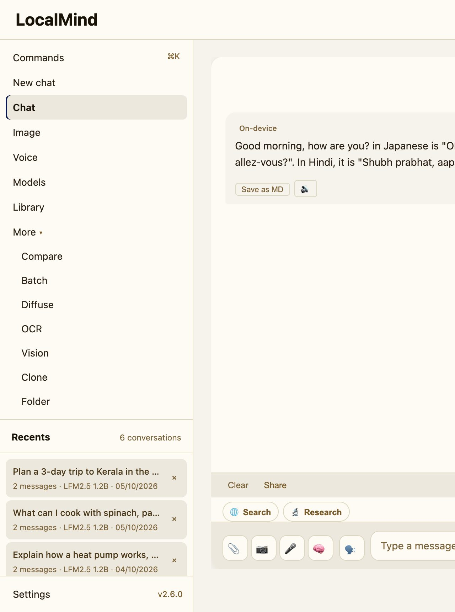
Press ⌘K (CtrlK on Windows and Linux), or click Commands, for a palette of every action: type a few letters and press Enter.
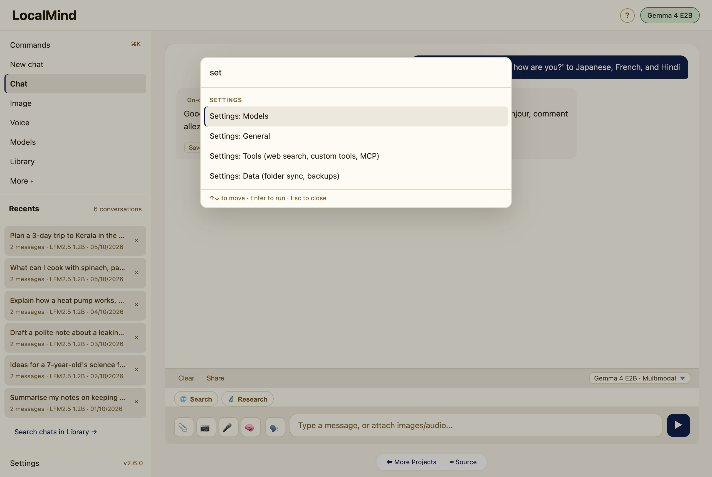
Open More → Compare, tick 2–3 models, type one question, and Send. LocalMind loads each model in turn (one at a time — WebGPU can’t hold several at once), collects every answer, then the last model loaded acts as judge and picks the best.
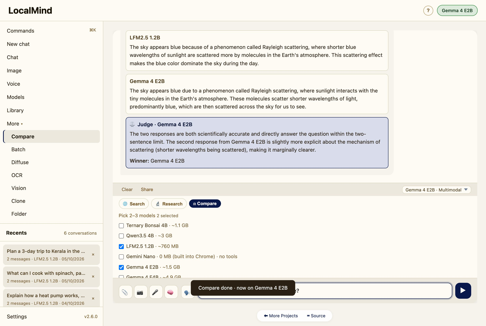
Turn on Research above the message box and ask a question. LocalMind drafts several sub-queries, searches the web, reads the top sources, and writes a cited report with a sources list. It needs a web-search provider; if none is set, Research opens the setting for you.
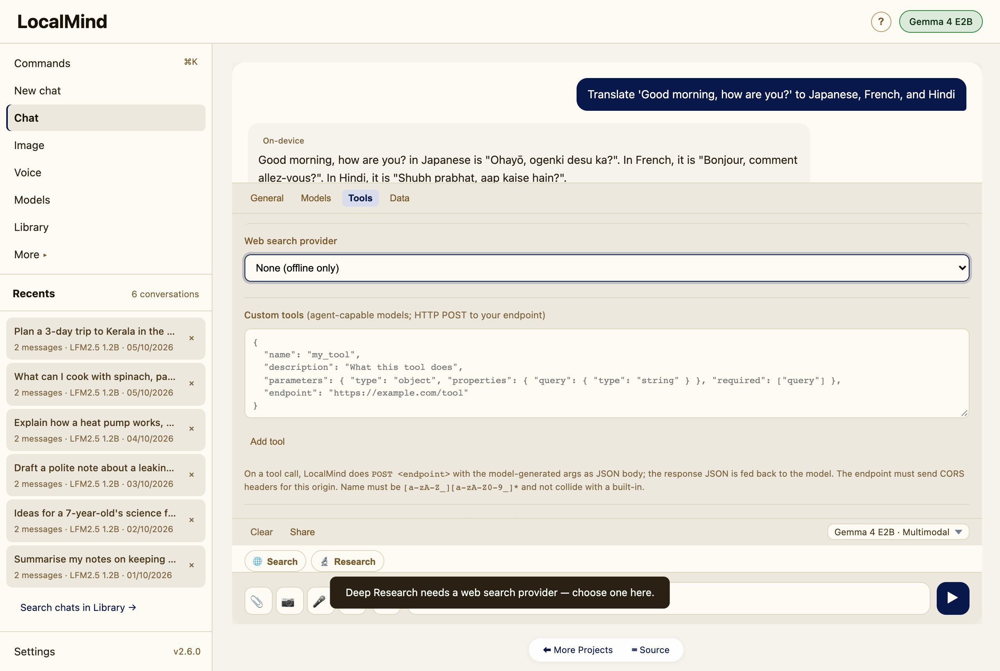
Open More → Batch and put one prompt per line (use Shift+Enter for new lines). Send runs them in sequence. Turn on Auto-inject {{previous}} to chain each answer into the next prompt.
The agent can save reusable skills — named recipes like “cite sources” or “be concise.” Once saved, a relevant skill is retrieved and applied automatically in later chats, so the assistant gets better the more you use it. Skills live in Library → Memory under the skill filter.
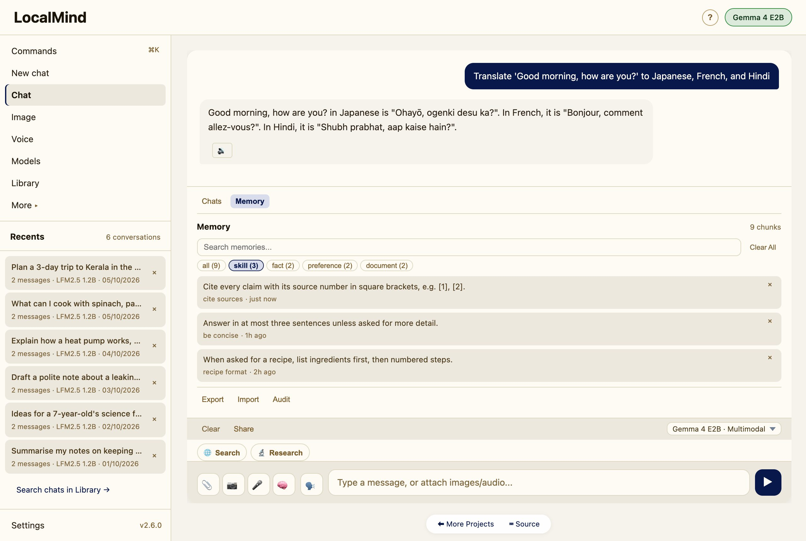
LocalMind keeps a private, on-device memory (a local vector store). The agent can store facts; you can attach documents (PDF / DOCX / TXT) with the 📎 button or add a whole Folder (under More), and they become searchable context. Open Library → Memory to browse, filter, search or clear it.
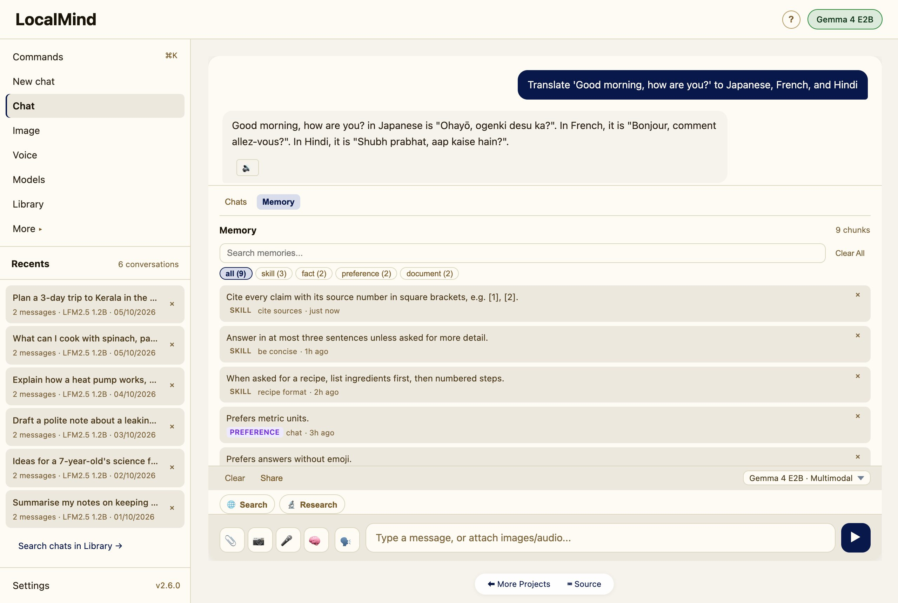
Library → Chats searches the full text of every saved chat, not only the titles.
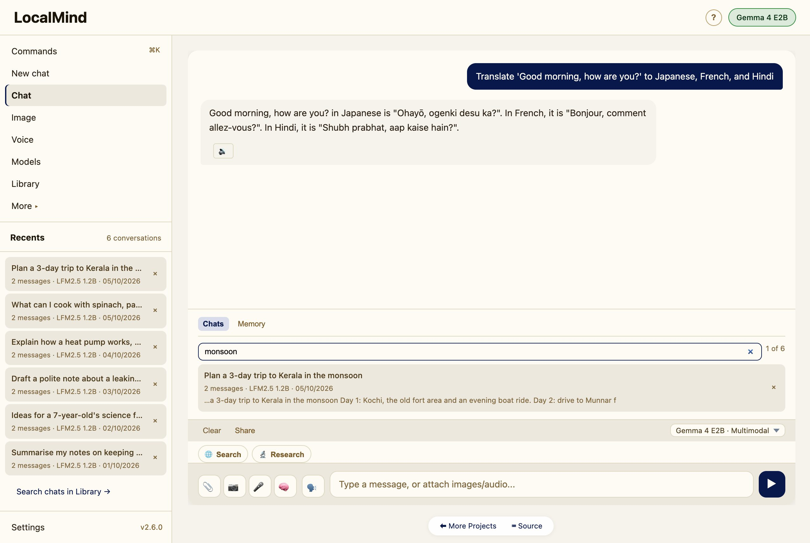
By default all data lives in this browser. In Settings → Data, connect a folder and LocalMind mirrors everything — skills, memory, documents, conversations — to it as plain files. Point that folder at a git / iCloud / Dropbox directory and your data follows you across devices. API keys stay in the browser and are never written to the folder.
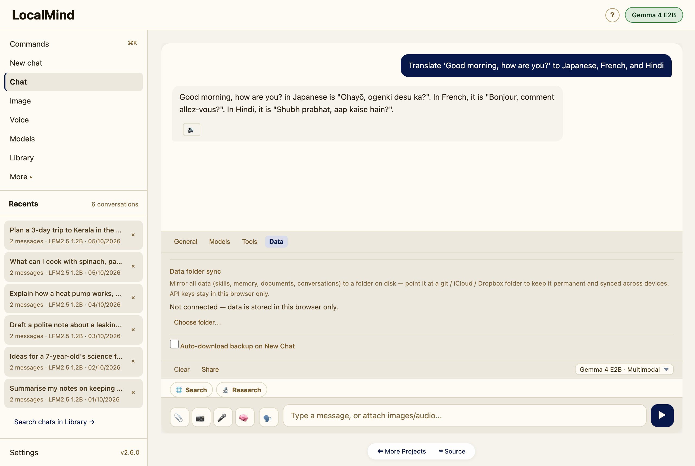
Image in the sidebar makes pictures on your GPU with a 4B diffusion model, or through your own stable-diffusion.cpp server. The picture shows large beside the controls, with a Download PNG button; earlier ones stay in the strip below.
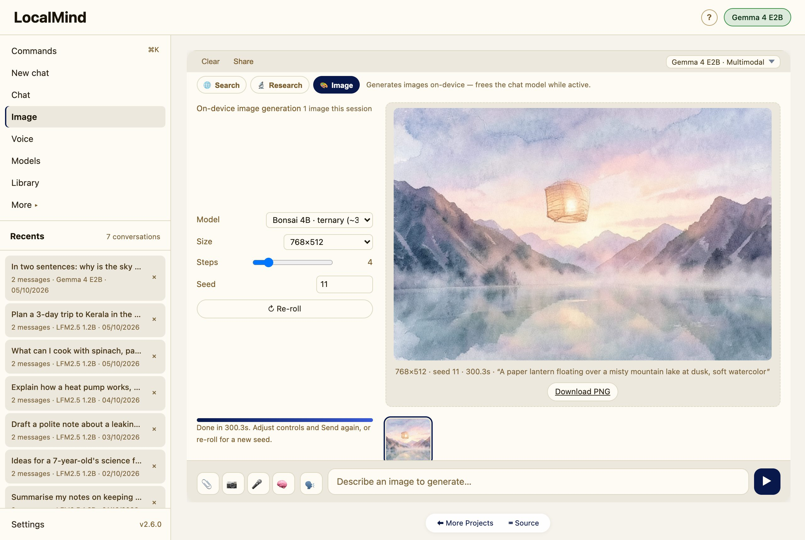
More → Diffuse is an experimental way to write text: instead of word by word, the whole answer starts as masked tokens and “denoises” into place.
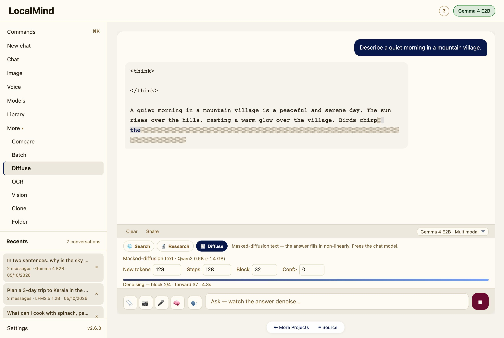
Settings → General → Appearance picks light, dark, or your system’s theme. On a phone, the ☰ button opens the sidebar, and the message box gets the full width with attach and voice stacked beside it.
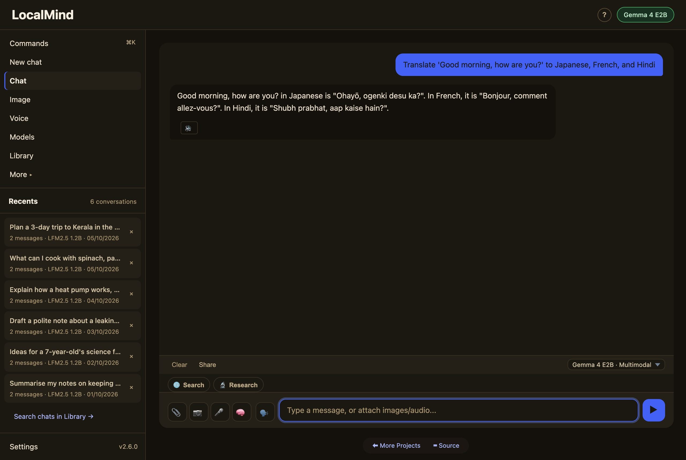
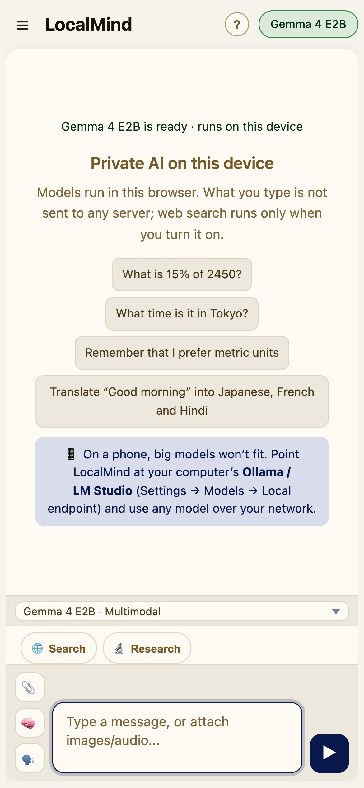
Models run on your device via WebGPU. Your conversations, memory, and documents never leave your machine. The only thing that touches the network is a web search — and only when you choose Search or Research, using a provider you configure. Once a model is cached, it loads from your browser with no download.